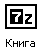

Архивация файлов
Архивация — это сжатие, то есть уменьшение компьютерного размера. Примечательно, что это процесс никак не влияет на качество файла.
Например, на компьютере есть книга. На компьютерном языке эта книга называется файл, и у него есть определенный размер. Допустим, у него размер 1 Мб (один мегабайт). При помощи архивации мы можем уменьшить этот размер в несколько раз без потери текста и качества. Был один мегабайт, а после процедуры будет то же самое, но размером 120 Кб (это в 8,5 раз меньше).
Вот как выглядит объект после архивации:
или:
или так:
Но такое значительное уменьшение возможно не всегда. Если Вы попробуете заархивировать музыку, видео, фотографии, то размер практически не изменится. Такой тип данных сжимается другим способом.
Зачем тогда она нужна? Неужели только для того, чтобы сжимать текст? А вот и нет. У данной функции есть еще одно замечательное свойство. По-простому его можно назвать «упаковка».

Например, у меня есть двадцать фото. Для удобства я их положил в отдельную папку. Приятель попросил переслать ему по электронной почте эти фотографии. Если Вы когда-нибудь пересылали по почте несколько объектов, то понимаете, что каждый из них нужно прикреплять к письму отдельно. То есть переслать папку, в которой лежат данные, нельзя. И в моем случае придется каждый из двадцати снимков прикреплять к письму отдельно. Это долго и неудобно. Есть ли выход?
Конечно, есть! И этот выход — архивация. Фотографии она не уменьшит, зато упакует.
Когда Вы запакуете файлы (папки), они добавятся в специальный «архив». Это что-то вроде закрытого ящика. Можно сказать, ваши данные запечатываются и при транспортировке остаются целыми и невредимыми.
Например, когда Вы приходите на почту, чтобы переслать какую-нибудь вещь, ее тщательно запаковывают. То же самое происходит и при архивации.
Значит, в моем случае с фотографиями, которые нужно передать по электронной почте, я могу их просто заархивировать. Получится один архив, то есть один файл. И когда я буду отправлять письмо, то отправлю один объект, а не двадцать. Это экономит время и нервы.
Именно по причине удобства, такая вот упакованная информация очень часто встречается в Интернете.